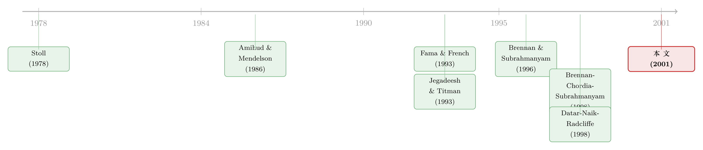

成交越「忽冷忽热」，收益反而越低——一个把作者自己都吓到的结果
本文读的是 Chordia, Subrahmanyam & Anshuman (2001, Journal of Financial Economics)：他们本想验证「流动性波动越大、要求回报越高」，结果数据给出了一个相反且强得出奇的答案——成交活动的波动率越高，股票的预期收益反而越低。在控制了规模、账面市值比、动量与成交量水平之后，美元成交额变异系数 (CVVOL) 在超额收益回归里的系数是 -0.333，t 值 -5.10，比成交量水平本身还要显著。
1 一个「想当然」的猜想，和它的翻车现场
先讲一个几乎所有做资产定价的人都会点头的逻辑链。
第一步：流动性 (liquidity) 是要被定价的。一只难脱手的股票，投资者要的回报更高——这是 Amihud and Mendelson (1986) 立下的规矩，如今早已是教科书常识（关于「数不清的零」如何量出流动性的价格，可参见《数不清的「零」：新兴市场用一串静止的价格，量出了流动性的价格》）。
接着，一个自然的问题是：既然流动性的一阶矩（水平）被定价了，那它的二阶矩（波动）呢？这里有一个听上去无懈可击的推理：人是厌恶风险的，如果一只股票的流动性时好时坏、忽冷忽热，那么持有它就要承担「将来想卖时可能正好卖不动」的风险。厌恶这种风险的投资者，理应要求一份补偿。换句话说——
流动性波动越大的股票，预期收益应当越高。
这就是本文三位作者（Tarun Chordia、Avanidhar Subrahmanyam、V. Ravi Anshuman）出发时怀揣的假设。逻辑顺、动机正、还能接上一条热门的研究线（Chordia et al. 2000 当时刚刚记录了流动性的「共同运动」，见《市场快「干涸」的那一刻：股与债的流动性，原来听的是同一个人》）。一切都准备好了，就等数据来盖章。
然后，反转出现了。
数据非但没有支持这个猜想，反而旗帜鲜明地站到了它的对立面：流动性（成交活动）波动越大的股票，预期收益越低。而且这个负相关不是「勉强显著」，是强得让作者自己都要在摘要里专门写一句 "a result contrary to our initial hypothesis" 和 "surprisingly strong"。
这篇文章真正有意思的地方，正在于此：它不是一篇「我猜对了」的论文，而是一篇「我猜错了，但错得很干净、很稳健，于是它本身成了一个异象」的论文。下面我们就一步步看，他们是怎么把这个意外结果钉死的。
2 用什么去量「流动性的波动」
第一个难题很现实：流动性怎么量？
理想中，我们想用买卖价差 (bid-ask spread) 这类直接度量。但在 1966–1995 这么长的样本里，逐月的价差数据根本不存在，没法算出可靠的标准差。于是作者退而求其次，沿用 Stoll (1978) 的思路，用成交活动给流动性当代理变量，而且一口气用两个：
- 美元成交额 (dollar trading volume, DVOL)：和做市商「多快能把头寸倒出去」有关，Stoll (1978) 里它和流动性正相关；
- 股票换手率 (share turnover, TURN)：成交股数除以流通股数，和代表性投资者的持有期相关，是 Amihud and Mendelson (1986)、Datar et al. (1998) 用过的口径。
为什么要两个？因为美元成交额带着价格的量纲——而 Berk (1995) 早就提醒过：任何和价格沾边的变量，在风险调整不当时都会「天然地」和收益相关。换手率是无量纲的，不含价格信息，正好用来堵这个漏洞。这是作者全文反复用来自我防卫的一招：凡是 DVOL 出现的结论，都让 TURN 再走一遍；两者结论一致，价格量纲的质疑就站不住脚。
而「流动性的波动」，他们用的是变异系数 (coefficient of variation)——过去 36 个月成交活动的标准差，再除以其均值：
CVVOL= 美元成交额的变异系数；CVTURN= 换手率的变异系数。
为什么用变异系数，而不直接用标准差？因为成交额的标准差和成交额的水平高度相关，直接放进回归会和「成交量水平」这个变量打架、互相污染。除以均值之后，变异系数成了一个干净的、衡量「相对波动」的尺子。这个细节后面很关键。
3 识别策略：先把「风险」从收益里减干净，再看特征说了什么
这篇文章没有花哨的自然实验，它的「识别」靠的是一套被 Brennan, Chordia and Subrahmanyam (1998)（下称 BCS）打磨过的两步法：先用因子模型把系统性风险从个股收益里剥掉，再在横截面上看「特征」还能不能预测剩下的部分。值得把这几步显式地拆开看，因为论文所有结论都长在这套程序上。
第一步，估因子暴露。 假定收益由一个 K 因子近似因子模型生成：
$$R_{jt} = E(R_{jt}) + \sum_{k=1}^{K} b_{jk} f_{kt} + e_{jt}$$
这里 \(R_{jt}\) 是证券 \(j\) 在 \(t\) 月的收益，\(f_{kt}\) 是第 \(k\) 个因子的收益，\(b_{jk}\) 是因子载荷。作者用 Fama and French (1993) 的三因子作为 \(f_{kt}\)，对每只至少有 24 个月观测的股票，用过去最多 60 个月的数据滚动估计 \(b_{jk}\)，并按 Dimson (1979) 的办法加一阶滞后来修正稀薄交易 (thin trading)。
第二步，写出 APT 的均衡约束。 如果市场组合对因子充分分散，期望超额收益就完全由因子暴露和因子风险溢价 \(\lambda_{kt}\) 决定：
$$E(R_{jt}) - R_{Ft} = \sum_{k=1}^{K} \lambda_{kt} b_{jk}$$
第三步，算「风险调整后收益」。 把上面两式合起来，作者定义每只股票每月的风险调整后收益 \(R^{*}_{jt}\)：
$$R^{*}_{jt} \equiv R_{jt} - R_{Ft} - \sum_{k=1}^{K} b_{jk} F_{kt}, \qquad F_{kt} \equiv \lambda_{kt} + f_{kt}$$
直觉上，\(R^{*}_{jt}\) 就是「把这只股票该有的风险补偿都扣掉之后、还多出来的那部分收益」。如果资产定价模型是对的，它平均应当是零；如果某个特征还能系统性地预测 \(R^{*}_{jt}\)，那就说明模型漏掉了东西——这正是「异象」的定义。
第四步，也是真正关键的一步，把 \(R^{*}_{jt}\) 在横截面上对一组公司特征 \(Z_{mjt}\) 做回归：
每个月都跑一遍这个 OLS，得到一组系数 \(\hat{c}_t = (Z'_t Z_t)^{-1} Z'_t R^{*}_t\)；再把逐月系数的时间序列取平均、算标准误——这就是经典的 Fama and Macbeth (1973) 估计量。作者还报告了一个「净化 (purged)」版本：把逐月系数对因子收益再回归一次、取截距，用来防范因子载荷估计误差带来的偏误（这招出自 Black, Jensen and Scholes 1972）。两套估计量结果几乎一样，所以后文多数表只报净化值。
把这套程序记在心里，再看结果，就知道每一个系数是从哪儿来的了。
4 主要结果：负号，而且强得反常
基准回归（Table 4）：先把成交量「水平」放进去。 在加波动率之前，作者先复现一个已知事实——成交活动的水平和收益负相关。控制了 SIZE、BM、PRICE、YLD 和动量之后：
- 美元成交额
DVOL的系数（超额收益）为-0.183，t 值-3.63；用 Fama-French 因子调整后的净化估计是-0.231，t 值-6.07。 - 把
DVOL换成换手率TURN，系数完全一样（-0.183/-0.231），符号、显著性都没变。
顺带，那些「老朋友」也都在：账面市值比 BM 系数 0.222（t = 4.49），动量三段 RET2-3、RET4-6、RET7-12 全部显著为正（如 RET7-12 系数 1.06，t = 6.70）——和 Fama and French (1996)、Jegadeesh and Titman (1993) 对得上。成交量水平的负号，则印证了 Amihud and Mendelson (1986) 和 BCS。到这里都还在「意料之中」。
关键回归（Table 5）：再把成交量「波动」放进去。 现在加入变异系数。结果是：
美元成交额变异系数
CVVOL在超额收益回归里的系数是-0.333，t 值-5.10。而且——CVVOL的统计显著性，比成交量水平DVOL本身还要高。
注意两件事。第一，符号是负的：波动越大，收益越低，和「厌恶流动性风险→要补偿」的猜想正好相反。第二，加入波动率之后，BM、流动性水平、动量这些效应的系数和显著性「基本不变」——也就是说，CVVOL 不是在抢别人的解释力，它带来的是一份增量的、之前没人记录过的横截面信息。换手率口径 CVTURN 同样给出稳健的负相关，这就排掉了「价格量纲作祟」的可能。
在做正式回归之前，作者还用一张分组表 (Table 3) 做了预演：先按规模分五组，再在每个规模组内按 CVVOL 分五档。结果是，在五个规模组里有四个，收益随 CVVOL 升高而单调下降；即便个别组单调性被打破，「上半张表的平均收益高于下半张表」这一点也始终成立。图表层面的直觉，和回归的结论完全一致。
5 这会不会只是「数据挖掘」？——一连串自证清白
一个负号、还强得反常，第一反应当然是怀疑：是不是跑了一堆回归、专挑显著的报？作者对此相当坦诚——「数据挖掘的批评永远无法被完全驳倒」——但他们摆出了几条理由，并用一整节的稳健性检验来堵漏：
- 动机在先。 既然流动性的一阶矩已被定价，研究它的二阶矩是自然的下一问，变量是事先定的，不是事后挑的（这正是 Lo and MacKinlay 1990 提醒的 data-snooping）。
- 换不同的波动率定义，结论不变；
- 分市场单独跑 NYSE、Amex、Nasdaq（Nasdaq 成交量数据从 1982 年 11 月才有，单列在 Table 8），结论不变；
- 加入 Pontiff and Schall (1998) 的预测变量，结论不变；
- 检验是否只是「流动性水平与收益」的非线性被误当成了波动率效应——也不是。
还有一个绕不开的替代解释：Merton (1987) 的「投资者关注 (clientele)」假说。它说，关注某只股票的投资者越多，要求回报越低；而高的成交波动，可能恰恰意味着持股人群变得更庞杂、更分散，从而压低了要求回报——这和「负号」是兼容的。作者用「跟踪该公司的分析师人数」作为投资者关注的代理去检验，发现成交波动对预期收益的作用基本没变。也就是说，关注度替代不掉这个效应。他们诚实地承认无法排除「某个被遗漏的风险因子」，但强调这样的解释「绝不显然」。
6 文献脉络
把这篇文章放回它的家族里看，线索很清楚。
源头是两条腿。一条是微观结构：Stoll (1978) 论证了做市商提供流动性是要收费的，成交量是流动性的代理；Amihud and Mendelson (1986) 进一步把买卖价差直接写进了资产定价，开了「流动性被定价」的先河。另一条是横截面实证：Fama and French (1992, 1993) 立起了规模、账面市值比的因子框架，Jegadeesh and Titman (1993) 加上了动量，这三件「特征」成了任何新异象都必须先控制掉的基准。

两条线在九十年代后期汇流。Brennan and Subrahmanyam (1996) 把价差拆成成本与议价两块、确认了「不流动性溢价」；Datar, Naik and Radcliffe (1998) 用换手率替代价差、记录了流动性与收益的关系；而 Brennan, Chordia and Subrahmanyam (1998)（BCS）则给出了本文直接套用的两步法工具，并率先记录了成交量水平与收益的负相关。Chordia, Roll and Subrahmanyam (2000) 又证明流动性存在「共同运动」——正是这一点，为「流动性波动该不该被定价」提供了直接动机。
本文 (2001) 站的位置，就是从「水平」迈向「波动」的那一步：它把成交活动的二阶矩第一次系统地塞进横截面，并意外地发现了一个负向异象。顺着这条线往后看，作者团队随后还专门研究了「预期成交活动」本身的横截面决定因素（见《为什么有的股票「天天换手」，有的却「躺平」不动？》），以及换手率究竟在多大程度上只是「跟着大盘再平衡」的产物（见《翻看换手率：你买卖股票，多半只是在跟着大盘「再平衡」》）。
评论与延伸（Q&A + 研究方向）
(a) 几个可能的疑问
Q：「成交波动越大、收益越低」这个负号，到底和直觉哪里冲突？
直觉是「波动 = 风险 = 要补偿 = 高收益」。但这里波动的是流动性而非收益本身，且符号是负的。一个能讲通的故事是 Merton (1987) 式的：成交波动大可能意味着持股人群更庞杂、关注度更高，反而压低了要求回报。本文没有断言机制，只是把这个反直觉的事实钉得很死。
Q：用「成交活动」代理流动性，可信吗？会不会量错了对象？
这是最大的软肋，作者也承认。他们的辩护是：用 1992 年约 3000 万笔 NYSE 交易数据算过，美元成交额变异系数与各种价差/深度波动率的横截面相关系数在
0.36–0.46之间。考虑到这是「日均值的标准差」之间的相关，作者认为这个量级「相当鼓舞人心」——但它毕竟只是代理，不是流动性本身。
Q：美元成交额带价格量纲，会不会是 Berk (1995) 说的「风险调整不当」在作怪？
作者用两招回应：一是回归里直接控制了价格水平
PRICE；二是换上无量纲的换手率CVTURN，结论照旧成立。价格量纲单独解释不了这个负号。
Q：为什么用变异系数，而不是直接用标准差？
因为成交额的标准差和成交额的水平高度相关，同时放进回归会互相污染。除以均值得到的变异系数是「相对波动」，能在控制住水平的前提下，干净地识别出波动的边际效应。
Q：加了波动率，原来的规模、价值、动量效应会不会被「吃掉」？
不会。Table 5 显示这些效应的系数与显著性「基本不变」，
CVVOL提供的是增量信息。这也正是作者强调它「在已知效应之上仍重要」的依据。
Q：这是不是又一个会被套利掉、或样本外消失的异象？
本文样本止于 1995 年，无法回答。这是所有横截面异象共同的命运问题——一个负号在 1966–1995 很强，不等于它在交易成本、卖空约束下真能被套利者赚到，也不保证它在后续二十年继续存在。
(b) 几个可能的研究问题与提案
1. 把这个异象搬到公司债市场。
【经济故事】公司债的流动性波动远比股票剧烈，且在危机时成片「干涸」。如果「成交波动→低收益」的负号源于关注度/持有人结构，那债券市场——持有人高度机构化、且分层——应当能更干净地区分「关注度」与「风险补偿」两种机制。 【可行性】中。TRACE 提供逐笔成交，可构造逐月成交额与换手率的变异系数；但公司债收益的风险调整远比股票棘手（需控制久期、信用利差因子）。识别上可借助同一发行人多只债券做横截面对照。
2. 拆开「关注度」与「风险补偿」。
【经济故事】本文用分析师人数检验 Merton 关注度假说，但分析师覆盖是个很粗的代理。若能用更直接的关注度数据（如机构持股集中度、零售下单流、新闻/搜索关注），就能判断负号究竟是「人群变庞杂压低回报」还是别的。 【可行性】高。13F 机构持股、新闻与搜索数据都可得；难点在于关注度与成交波动天然内生，需要找一个只影响关注度、不直接影响收益的冲击（如指数纳入、券商研究覆盖的外生变动）。
3. 外资持有人与成交波动。
【经济故事】外资进出往往是成交波动的重要来源（关于外资「赖着不走」与「追涨」，可参见《外资是「追涨」的，但真正可怕的是他们「赖着不走」》）。若外资引致的成交波动与本地投资者引致的波动在定价上不同，就能进一步识别机制。 【可行性】中。需要按投资者类型拆分的成交/持仓数据（如韩国、台湾的逐笔账户数据），这类数据稀缺但确实存在。
4. 样本外与交易成本检验。
【经济故事】最该问的还是：1996 年至今，这个负号还在吗？多空组合扣掉真实交易成本后还剩多少？毕竟「波动大」的股票往往也是「最难交易」的那批。 【可行性】高。CRSP/Compustat 数据现成，直接把本文回归延伸到当下，再叠加流动性成本估计即可。这是最 doable 的一篇复制+延伸。
我的判断
这篇文章的贡献，恰恰在于它的「失败」。作者带着一个漂亮的先验来，被数据打了脸，却没有把不利结果藏起来，而是把这个反直觉的负号反复验真、做成了一个独立的横截面事实——CVVOL 系数 -0.333、t 值 -5.10，比成交量水平本身还显著。它把资产定价里「成交活动」这一族变量，从「水平」推进到了「波动」，给后来的因子动物园添了一块谁也没料到的拼图。
但要老实说识别上的担忧。其一，全文是关联，不是因果：成交波动是流动性的代理、又与关注度、持有人结构、定价误差纠缠在一起，作者只能逐一排除替代解释，却给不出一个被识别的机制。其二，代理变量的脆弱性：用成交量代理流动性、用变异系数代理流动性风险，每一层代理都可能引入噪声，而 0.36–0.46 的相关系数算不上铁证。其三，Berk 的幽灵没法彻底驱散——换手率检验缓解了价格量纲问题，但「某个被遗漏的风险因子」始终是悬在头上的可能。
后续我最想看到的，是两件事：一是把它延伸到样本外、并扣掉真实交易成本，看这个负号是「会被套利掉的定价误差」还是「稳健的溢价」；二是用更细的投资者结构数据，把「关注度压低回报」这个机制要么坐实、要么证伪。在那之前，这篇文章最好的读法，是把它当成一面镜子：它提醒我们，一个动机正当、逻辑顺滑的猜想，照样可能被数据彻底掀翻——而真正的研究，从掀翻那一刻才开始。
参考文献
Amihud, Y., Mendelson, H. (1986). Asset pricing and the bid-ask spread. Journal of Financial Economics 17, 223–249.
Berk, J. (1995). A critique of size related anomalies. Review of Financial Studies 8, 275–286.
Black, F., Jensen, M., Scholes, M. (1972). The capital asset pricing model: some empirical tests. In: Jensen, M. (Ed.), Studies in the Theory of Capital Markets. Praeger Publishers, New York.
Brennan, M., Chordia, T., Subrahmanyam, A. (1998). Alternative factor specifications, security characteristics, and the cross-section of expected stock returns. Journal of Financial Economics 49, 345–373.
Brennan, M., Subrahmanyam, A. (1996). Market microstructure and asset pricing: On the compensation for illiquidity in stock returns. Journal of Financial Economics 41, 341–364.
Chordia, T., Roll, R., Subrahmanyam, A. (2000). Commonality in liquidity. Journal of Financial Economics, forthcoming.
Datar, V., Naik, N., Radcliffe, R. (1998). Liquidity and asset returns: An alternative test. Journal of Financial Markets 1, 203–219.
Dimson, E. (1979). Risk measurement when shares are subject to infrequent trading. Journal of Financial Economics 7, 197–226.
Fama, E., French, K. (1992). The cross-section of expected stock returns. Journal of Finance 47, 427–466.
Fama, E., French, K. (1993). Common risk factors in the returns on stocks and bonds. Journal of Financial Economics 33, 3–56.
Fama, E., French, K. (1996). Multifactor explanations for asset pricing anomalies. Journal of Finance 51, 55–84.
Fama, E., Macbeth, J. (1973). Risk, return, and equilibrium: Empirical tests. Journal of Political Economy 71, 607–636.
Jegadeesh, N., Titman, S. (1993). Returns to buying winners and selling losers: implications for stock market efficiency. Journal of Finance 48, 65–92.
Lo, A., MacKinlay, C. (1990). Data-snooping biases in tests of financial asset pricing models. Review of Financial Studies 3, 431–468.
Merton, R. (1987). A simple model of capital market equilibrium with incomplete information. Journal of Finance 42, 483–510.
Pontiff, J., Schall, L. (1998). Book-to-market ratios as predictors of market returns. Journal of Financial Economics 49, 141–160.
Stoll, H. (1978). The supply of dealer services in securities markets. Journal of Finance 33, 1133–1151.